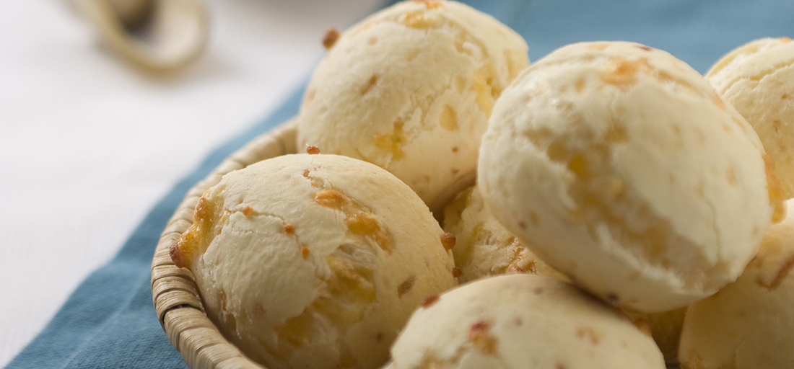

Chipá de queso

INGREDIENTES
- 1 huevo
- 125 g de manteca
- 1 taza de leche aproximadamente
- 1 ¼ cdita de sal
- 500 g de harina de mandioca
- 3 sobres de queso en hebras
PREPARACIÓN
- Mezclar el huevo con la manteca derretida tibia y la leche.
- Unir la sal, la harina de mandioca y los quesos en hebras.
- Agregar a la preparación anterior y unir hasta obtener una masa que no se pegue a los dedos. Dejar reposar en la heladera durante 30 minutos envuelta con papel film.
- Precalentar el horno a temperatura de media a alta ( 220°C ).
- Retirar la masa de la heladera, formar pelotitas de aproximadamente 25g y disponerlas sobre una placa limpia.
- Llevar al horno y cocinar de 10 a 15 minutos o hasta que doren.